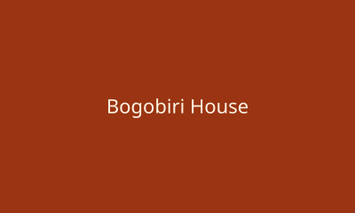

Terra Kulture
A renowned cultural center in Victoria Island featuring Nigerian cuisine, rotating art exhibitions, and theatrical stage plays.
View on MapA renowned cultural center in Victoria Island featuring Nigerian cuisine, rotating art exhibitions, and theatrical stage plays.
View on Map
A vibrant boutique hotel, African art gallery, and live music hub tucked into a quiet street in Ikoyi.
View on MapA stylish nightlife spot in Victoria Island known for its cocktail menu, DJ sets, and late-night crowd.
View on MapA spacious, quiet study environment in Yaba with reliable wifi and long opening hours — a favorite for students and remote workers.
View on Map